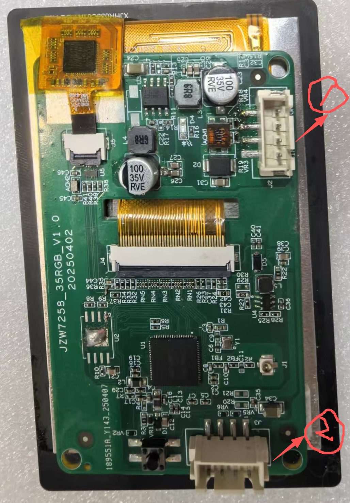
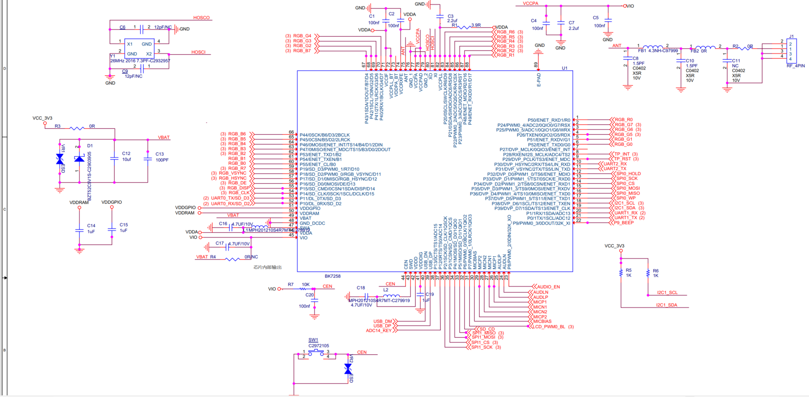
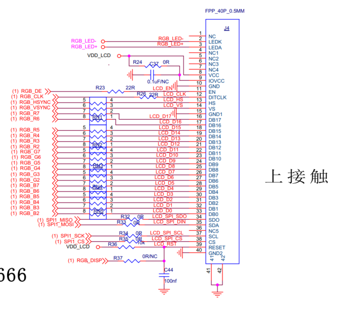
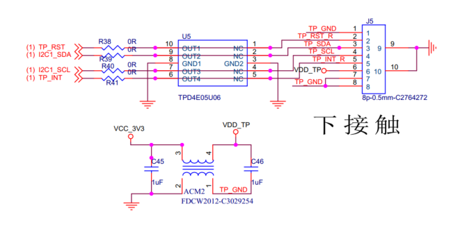
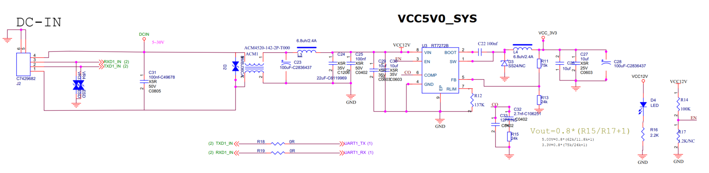

概述¶
JZW7258核心特点是BT和WIFI的相关驱动，两者应用强大而复杂。 而其它基础外设驱动接口已封装完善，用户使用方便，按需求调用接口给定参数即可。 下列对外设接口进行模块化详细说明
开发板¶

- 1号接线端子：5V供电接口 + UART1通信端口 一体式
- 2号接线端子：UART0，DEBUG烧录 + 调试打印信息 一体式
原理图¶
- MCU部分

- LCD部分

- TP部分

- UART0部分

- UART1部分

GPIO¶
BK7258有多达56个gpio，可以配置为输入或输出。所有gpio都与备用功能共享。一般情况，用户可根据以下步骤来使用GPIO： * 对照硬件原理图，找出程序中这些引脚是否启用，确认引脚一一对应。 * 检查API返回值，确保没有ERR。
MAP Config¶
GPIO根据映射表GPIO_DEFAULT_DEV_CONFIG进行参数配置
| MAP参数序号 | MAP参数名 | 详解 |
|---|---|---|
| 00 | gpio_id | 从 0 开始编号的对应GPIO引脚号 |
| 01 | second_func_en | 是否启用第二功能 |
| 02 | second_func_dev | 第二功能见GPIO_DEV_MAP，用户不可修改该表格 |
| 03 | io_mode | 选择IO模式 |
| 04 | pull_mode | 选择上拉或下拉 |
| 05 | int_en | 是否开启中断 |
| 06 | int_type | 选择中断触发条件 |
| 07 | low_power_io_ctrl | 低功耗模式下是否保持GPIO的输出状态或设置为唤醒源 |
| 08 | driver_capacity | 共四个等级的驱动能力 |
GPIO使用介绍¶
- 用户根据开发板需求配置GPIO_DEFAULT_DEV_CONFIG表，譬如jzw7258工程下的config_cp1中就修改了该表的默认值，对于TP引脚修改了原有的GPIO使用，等于二次复用。(如果您想在程序运行期间更改某个 GPIO 的功能，可以使用 gpio_dev_unmap() 函数取消原有的映射，然后使用 gpio_dev_map() 函数进行新的映射。 GPIO外设初始化时会在gpio_hal.c的 gpio_hal_default_map_init（）函数里按照 GPIO_DEFAULT_DEV_CONFIG 表初始化GPIO（需要打开宏CONFIG_GPIO_DEFAULT_SET_SUPPORT，平台只会操作一次，后面以用户配置为准,如果没有开启该宏，则平台不会操作GPIO，GPIO默认值为高组态）)
- 新建工程之后，每个CPU必须配置自己需要控制的GPIO,确保每个CPU管理自己的GPIO，注册相应的中断回调函数，确保程序按预期运行： 启用宏CONFIG_USR_GPIO_CFG_EN配置； 创建 usr_gpio_cfg.h 文件：在项目的合适位置创建 usr_gpio_cfg.h 头文件，并在该文件中定义你自定义的 GPIO_DEFAULT_DEV_CONFIG
- gpio_map.h文件中的map表，覆盖了所有GPIO的配置说明，如若和默认有不同的GPIO需在此处进行修改（比如下文会提到的PWM引脚）
UART¶
UART分为DEBUG和通信，两者波特率皆115200。UART0作为DEBUG接口，有烧录工程和调试程序的作用。在程序对应位置加入打印信息，烧录后即可看到相关内容。根据原理图可知，UART0引脚对应：RX-GPIO10,TX-GPIO11,在驱动层已配置好用户无需修改；UART1引脚对应：RX-GPIO1,TX-GPIO0,同理已配置好。需要实现的现象是：电脑发给开发板什么数据，开发板将接收到的数据原样返回给电脑。采用sscom串口调试工具(若只查看串口数据可以用哦xshell)。无论采用什么方式实现，都需要配置好串口需要的参数，如下:
static const uart_config_t s_config = {
.baud_rate = CONFIG_UART_EXAMPLE_BAUD_RATE, 波特率配置115200
.data_bits = CONFIG_UART_EXAMPLE_DATA_BITS, 8位数据位
.parity = CONFIG_UART_EXAMPLE_PARITY, 无奇偶校验
.stop_bits = CONFIG_UART_EXAMPLE_STOP_BITS, 1位停止位
.flow_ctrl = CONFIG_UART_EXAMPLE_FLOW_CTRL, 无硬件控制流
.src_clk = CONFIG_UART_EXAMPLE_SRC_CLK, 时钟26Mhz
};
发包通路¶
bk_uart_write_bytes() 调用此接口进行数据发送
收包通路¶
- 硬件收包： UART将接收包存放在硬件FIFO中，当包中数据超过上限时即溢出，产生RX中断。
- 中断收包： UART在规定时间内没有收到包时，产生RX接收完成中断，软件进入中断接收处理中，硬件读取数据放入RX FIFO
- 应用收报： 调用bk_uart_read_bytes() 接口接收数据，此时从RX FIFO中读取数据，到达一定时间立即返回接收到的数据，如若时间为0则代表立即返回数据。
应用场景¶
当前UART支持以下应用场景：
- 默认UART中断流程：默认使用bk_uart_write_bytes()和bk_uart_read_bytes()处理收发包，满足大部分应用需求。
- 基于第一种方式，注册用户回调callback，产生中断后，执行用户的中断回调函数
- 第三方代码实现： bk_interrupt_register(xx, isr, arg) 替换默认的 UART 中断处理程序。 此时收发包过程完全由应用实现。
以第一种为例，代码流程如下： * 主函数入口处进行串口驱动初始化 bk_uart_driver_init()，底层规定，在调用任何其它UART接口函数之前，应先调用此API，以初始化所有UART ID通用资源。 * 串口初始化：调用bk_uart_init(UART_ID_1, &s_config)，参数一规定ID，参数二为UART参数配置。 * 使能软件FIFO: 调用bk_uart_enable_sw_fifo()函数。 * 使能接收中断bk_uart_enable_rx_interrupt()。
回看第二种实现方式，基于第一种加入用户回调函数，故在此之上还需要开启回调函数。调用bk_uart_register_rx_isr()函数，注册接收中断，其中第二个函数为中断回调函数uart_example_rx_isr，用户需自定义此函数加入中断业务需求。如当前需要实现的现象，将接收到的数据返回给PC端
int len = bk_uart_read_bytes(UART_ID_1, data, UART_EXAMPLE_BUF_LEN, 0);
if(len >= UART_EXAMPLE_BUF_LEN)
{
len = UART_EXAMPLE_BUF_LEN;
}
BK_LOGI(TAG, "uart recv data :\r\n");
for(int i = 0; i < len; i++)
{
BK_LOGI(TAG, "data[%d]=0x%x\r\n", i, data[i]);
}
uart_send_data(data, len);
应用工程中引用串口时，需要打开宏CONFIG_UART1，具体配置详见IDK下的UART项目。
PWM¶
JZW7258开发板有PWM0和PWM1两组PWM开发器，PWM控制器下有3个TIM定时器，每个定时器有2个channel。因此，每个 PWM 控制器有6个 channel，共支持12个 channel，对应软件中的 PWM_ID_0 到 PWM_ID_11。PWM时钟源有26M和32M两种，常规选择26M时钟，则 PSC应配置为25。 PWM本身的功能就是更改占空比值，可以实现调节背光或蜂鸣器此类带有PWM功能的设备，除正式设置占空比参数的流程外，还需要进行外设初始化相关操作，这是所有外设不可避免的主要环节。在进行正式操作之前，先要确认GPIO接口是否与硬件开发板对应正确，与上文GPIO章节对应所说，修改GPIO需在gpio_map.h文件中确认。发现默认PWM0的gpio为p8,而JZW7258开发板的PWM0对应为p7，故此修改即可。 以调节背光的PWM0作为示例，代码流程如下：
初始化部分¶
- 入口主函数PWM驱动初始化，调用bk_pwm_driver_init()。同UART，驱动初始化必须在调用其它PWM接口之前调用此API。
- 在开始PWM流程前，先要进行ID初始化，这点和UART同理，调用bk_pwm_init()，配置参数调用 pwm_init_config_t init_config 结构体，重新初始化参数，这里配置PWM为100占空比，即上电后为满率，需要更改PWM的逻辑时再调用更改占空比的用户接口(具体见下文步骤)。
- 与常规不同的是，初始化后的启动，需要启用中断才能生效，但这里不需要用户回调处理，同UART非阻塞处理的流程。由于初始化里启用了中断，需要关闭中断，故调用BK_LOG_ON_ERRbk_pwm_capture_stop()/bk_pwm_capture_start()函数。
设置PWM占空比参数¶
- 已封装好函数接口，入口参数为用户需要设置的占空比值，调用user_pwm_set_backlight(uint32_t duty)函数即可
WIFI¶
WiFi也可看做一个外设，故与UART和PWM有异曲同工之妙。 * 支持三个虚拟接口：STA、AP、Monitor * 支持仅 station 模式、仅 AP 模式、station + AP 共存模式 * 支持 IEEE802.11 b/g/n/ax 2.4GHz 协议标准 * 支持 AMSDU、AMPDU、QoS、HT40 以及其他主要功能 * 支持802.11N MCS0-7 * 支持 WPA、WPA2 及 WPA3 等加密方式 * station 模式下支持低功耗休眠 * 空中数据传输最高可达 20Mbits/s TCP 吞吐和 35Mbits/s UDP 吞吐
station模式¶
包含了初始化、配置、连接&断开连接等各阶段的具体描述
WiFi初始化:¶
- 主任务入口调用 bk_event_init() 函数，以创建任务并初始化时间队列，此函数必须放在其它WIFI/BT接口函数之前。
- 再调用 bk_netif_init() 函数，创建并初始化 Lwip 核心任务。
- 调用 bk_wifi_init() 函数，创建 Wi-Fi 驱动程序任务，并初始化 Wi-Fi 驱动程序，其中包括：底层 MAC 软件、射频参数、wpa_supplicant 。
- 主任务通过调用系统 API 创建应用程序任务。
WIFI配置：¶
- 调用 bk_wifi_sta_set_config() 函数配置参数，常规情况，用户传入AP名称和密码，必须再bk_wifi_sta_start() 开启之前调用。
启动阶段：¶
- 调用 bk_wifi_sta_start() 函数启动WIFI,启用成功返回OK，可先调用bk_wifi_sta_stop()停止，再开启。
连接阶段：¶
- 调用bk_wifi_sta_connect() 函数连接WIFI，将启动内部扫描和连接流程
- 成功发现AP后会上报成功标志
- 连接成功后启动 DHCP 客户端服务，触发 DHCP 流程。
获取IP地址¶
- 启动 Lwip 的 DHCP 客户端获取 IP 地址
- 触发IPV4，可以进行数据收发，如TCP/UDP。